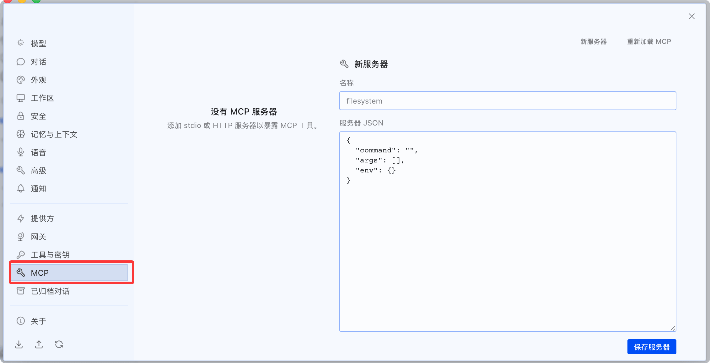

Hermes Agent MCP integration
MCP (Model Context Protocol) is an open protocol proposed by Anthropic for standardizing interactions between LLMs and external tools.
Hermes natively supports MCP, allowing integration with any MCP-compatible service such as GitHub, databases, file systems, browser stacks, and internal APIs without modifying core code.
This chapter will dive into MCP's two integration methods, tool filtering strategies, security isolation mechanisms, and common troubleshooting.
What is MCP
MCP solves a practical problem: with each new service integration, the traditional approach requires writing adapter code, defining tool schemas, and handling authentication—every service is one-off work.
MCP standardizes all of this. Hermes can directly integrate with any service that implements the MCP protocol, with no additional development required.
MCP's core role:
Hermes Agent（MCP 客户端）
│
├── stdio ──→ MCP 服务器 A（本地子进程）
│ └── 暴露工具：git_commit, git_push...
│
├── HTTP ───→ MCP 服务器 B（远程服务）
│ └── 暴露工具：list_issues, create_issue...
│
└── HTTP ───→ MCP 服务器 C（远程 OAuth）
└── 暴露工具：search_docs, create_page...
Standard installation includes MCP support, no additional steps required. All MCP servers in~/.hermes/config.yamlcentralized configuration in.
MCP is not a proprietary protocol of Hermes—it is open. Servers written for other MCP-supporting tools (such as Claude Code's MCP servers) can be used directly in Hermes, and vice versa.
Two types of MCP servers
Local stdio server
Runs locally as a subprocess, communicating with Hermes via standard input/output (stdin/stdout).
Communication uses the JSON-RPC protocol, with each message separated by a newline character.
Applicable scenarios: tools are installed locally, requiring low-latency access to local resources (file systems, Git repositories, local databases).
Example
# MCP stdio Server Configuration
mcp_servers:
# GitHub server: start via npx
github:
command: "npx"
args: ["-y", "@modelcontextprotocol/server-github"]
env:
GITHUB_PERSONAL_ACCESS_TOKEN: "ghp_..."
# Filesystem server: restrict the Agent's access scope
filesystem:
command: "npx"
args:
- "-y"
- "@modelcontextprotocol/server-filesystem"
- "/home/user/projects" # Only allow access to this directory
# Git server: start via uvx
git:
command: "uvx"
args:
- "mcp-server-git"
- "--repository"
- "/home/user/project"
The lifecycle of stdio servers is managed by Hermes:
- Session start or
/reload-mcpWhen Hermes starts a child process - When a session ends or a server is disabled, Hermes terminates the child process.
- A crashed child process automatically restarts (with up to 3 retries).
Remote HTTP server
Directly connects to remote MCP endpoints via HTTP requests, supporting multiple authentication methods.
Applicable scenarios: tools are hosted remotely, or your organization already has MCP interfaces.
Example
# MCP HTTP server configuration
mcp_servers:
# Method 1: Static Bearer Token authentication
internal_api:
url: "https://mcp.internal.example.com/mcp"
headers:
Authorization: "Bearer ${MY_TOKEN}" # Support Environment Variables
# Method 2:OAuth 2.1 authentication（Linear、Sentry、Figma、Stripe etc.)
linear:
url: "https://mcp.linear.app/mcp"
auth: oauth
# Method 3: Providers requiring pre-registered OAuth clients
googledrive:
url: "https://drivemcp.googleapis.com/mcp/v1"
auth: oauth
oauth:
client_id: "<your-oauth-client-id>" # Pre-registration fetch
client_secret: "<your-oauth-client-secret>"
Comparison of two types
| Dimension | stdio server | HTTP server |
|---|---|---|
| Run location | Local (child process) | Remote (standalone service) |
| Communication method | stdin/stdout + JSON-RPC | HTTP request |
| Lifecycle | Hermes manages start/stop | Independent of Hermes |
| Latency | Extremely low (in-process communication) | Depends on network latency |
| authentication | Environment variable passing | Bearer Token / OAuth 2.1 |
| Typical scenarios | Local Git, file systems, databases | GitHub API、Linear、Sentry |
| Configuration complexity | Low (one-line command) | in (requires URL + authentication configuration) |
Nous curated MCP directory
Hermes comes with a Nous Research-vetted MCP directory, offering a one-click installation experience.
Browse and install
Open the interactive selector (TUI) to browse all directory entries:
hermes mcp
Other commands:
# 纯文本列表（适合脚本化） hermes mcp catalog # 按名称一键安装 hermes mcp install n8n hermes mcp install github hermes mcp install linear
The interactive selector shows the current status of each entry:
n8n available 管理和检查 n8n 工作流 linear enabled Linear 问题/项目管理（远程 OAuth） github installed (disabled) GitHub 仓库 + PR 工具 filesystem installed (enabled) 安全的文件系统操作 postgres available PostgreSQL 数据库查询 slack available Slack 消息和频道管理
Status description:
| State | Meaning |
|---|---|
| available | Installable, not yet installed |
| installed (enabled) | Installed and enabled, available for the Agent to use. |
| installed (disabled) | Installed but disabled, not available for the Agent. |
| enabled | Remote OAuth server, authorized and enabled. |
Desktop version: view configuration in the settings menu:

View the configuration in the MCP menu on the left of the dashboard:

What happens during installation
One-click installation automatically completes three steps:
- Configuration guide: prompts you to enter the API Key or guides the OAuth browser authorization flow.
- Tool detection: connects to the server and retrieves the complete list of tools it exposes.
- Tool selection: displays the tool list for you to check the tools you want to enable (all selected by default).
The third step (tool selection) is an important security checkpoint—you don't need every tool. For example, if the GitHub server exposes delete_repo and you don't need it, you can uncheck it.
Tool filtering: expose only what you need
Every MCP server supports fine-grained tool filtering. This is a key security mechanism for reducing the Agent's attack surface.
include mode (whitelist)
Only register tools in the list; exclude all others:
Example
# include whitelist mode — the safest choice.
mcp_servers:
github:
command: "npx"
args: ["-y", "@modelcontextprotocol/server-github"]
env:
GITHUB_PERSONAL_ACCESS_TOKEN: "ghp_..."
tools:
include:
- list_issues
- create_issue
- update_issue
- search_code
# Any tools other than these 4 will not be registered
exclude mode (blacklist)
Exclude tools in the list; register all others:
Example
# Exclude blacklist mode — exclude high-risk operations
mcp_servers:
stripe:
url: "https://mcp.stripe.com"
headers:
Authorization: "Bearer ${STRIPE_KEY}"
tools:
exclude:
- delete_customer
- refund_payment
- create_live_key
# Any tool other than these 3 will be registered
Filter rule priority
| Configuration | Behavior | Applicable scenarios |
|---|---|---|
| Only include | Only register tools in the include list | Security first, principle of least privilege |
| Only exclude | Register all tools, exclude the exclude list | Convenience first, exclude a few high-risk operations |
| Set both | include takes priority, exclude is ignored | — |
| Neither is set | Register all tools exposed by the server | Fully trust this MCP server |
Disable resources and prompts
In addition to tools, MCP servers may also expose resources and prompts. If you don't need them, you can turn them off:
Example
# Reference MCP toolset in platform configuration
platform_toolsets:
cli:
- hermes-cli
- file
- terminal
- mcp-github # GitHub MCP tool
mcp-linear # Linear MCP tool
telegram:
- hermes-gateway
- mcp-github # Also enable GitHub tools on Telegram
discord:
- hermes-gateway
# GitHub tools not enabled on Discord (security policy)
MCP environment variable isolation
This is the most easily overlooked yet most important design in Hermes' MCP security mechanisms.
The MCP stdio child process receives anFiltered environmentBy default, only passes the following variables:
PATH, HOME, USER, LANG, LC_ALL, TERM, SHELL, TMPDIR 以及所有 XDG_* 变量
All other environment variables (API Key, Token, password) are blocked.
Only environment variables explicitly declared in the MCP server configurationenv:Only variables explicitly declared in the block are passed into the child process:
Example
GITHUB_PERSONAL_ACCESS_TOKEN: "ghp_..." # Only这aVariable传入
# Even if you exported GITHUB_TOKEN in the Shell,
# If not declared here, it will not be passed to the MCP subprocess
Why is it designed this way? Suppose you have 10 API Keys stored in .env (OpenAI, Anthropic, SerpAPI, Telegram Bot Token...). If an MCP server could read all environment variables, a malicious MCP server tool could steal all credentials. Environment variable isolation ensures it can only see the explicitly declared one.
Error messages are automatically redacted
MCP tool error messages are automatically sanitized before being returned to the LLM—sensitive information (API Key, Token, password) is replaced with[REDACTED]。
This prevents the Agent from accidentally seeing plaintext credentials when analyzing errors.
Manually add an MCP server
Besides one-click installation from the Nous directory, you can also manually add any MCP-compatible server.
Example
hermes mcp add my-git-server \
--command "uvx" \
--args "mcp-server-git,--repository,/home/user/project"
# Manually add HTTP server
hermes mcp add internal-db \
--url "https://mcp.internal.example.com/db" \
--header "Authorization: Bearer ${DB_TOKEN}"
# Test whether the connection is normal
hermes mcp test my-git-server
# Configure Tool Filtering
hermes mcp configure my-git-server
hermes mcp configureIt opens an interactive tool selection interface, letting you re-check the tools to enable.
Reload MCP configuration
After modifying the MCP configuration in config.yaml, there's no need to restart the entire Agent:
Example
hermes mcp # 交互formulaDirectorySelectors（TUI）
hermes mcp catalog # plain text catalog listing
hermes mcp install <name> # One-click install from directory
# ─── hand动管manage ───────────────────────────────────────────────
hermes mcp add <name> --command <cmd> --args <...> # add stdio Server
hermes mcp add <name> --url <url> # add HTTP Server
hermes mcp remove <name> # Remove server configuration
hermes mcp list # List all configured servers
hermes mcp test <name> # Test server connection
hermes mcp configure <name> # reselect enabled tools
# ─── OAuth authentication ─────────────────────────────────────────────
hermes mcp login <server> # Start OAuth authorization（最longwait 5 Divide钟）
# ─── Runtime Operations ─────────────────────────────────────────────
/reload-mcp # SessioninsideAgainaddload MCP Configuration
hermes mcp reload # Reload from command line
Common troubleshooting
| Problem | Possible causes | Solution |
|---|---|---|
| MCP tools don't appear | Server not enabled or connection failed | Run hermes mcp list to check status, hermes mcp test to test connection |
| Tool filtering not taking effect | Used the tool name registered by Hermes | Use the original MCP tool name (with hyphens, e.g., list-issues instead of list_issues) |
| stdio server crashes frequently | Missing dependencies or insufficient permissions | Check whether command is in PATH, manually run a test |
| OAuth authorization timeout | The 30 seconds for /reload-mcp is not enough | First hermes mcp login, then /reload-mcp after completion |
| Environment variables not taking effect | Not explicitly declared in the env: block | Declare in mcp_servers.<name>.env, do not rely on Shell environment variables |
| HTTP server connection refused | URL unreachable or authentication failed | Check the URL and Authorization header to confirm network connectivity. |
Click me to share notes
The note must be an extension of this article's content!
For article submission, click here
How to obtain the registration invitation code
Before sharing notes, you mustLog in！
How to obtain the registration invitation code